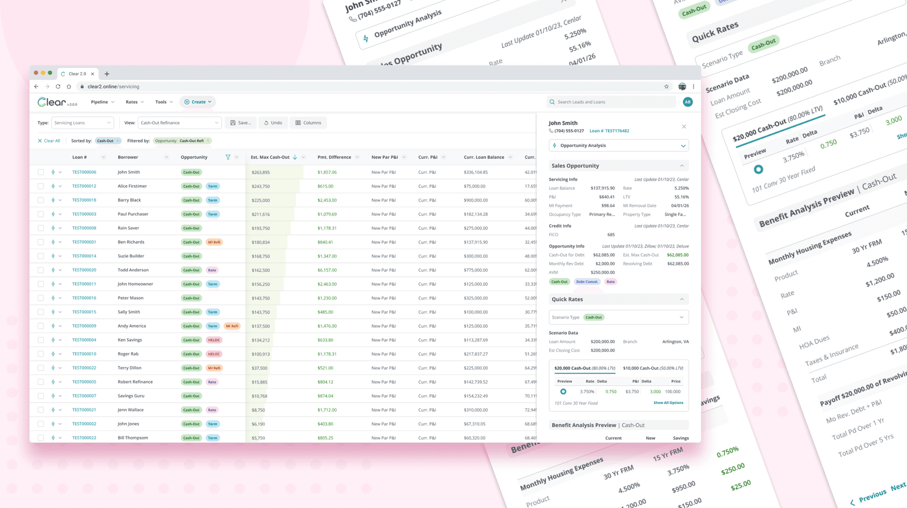
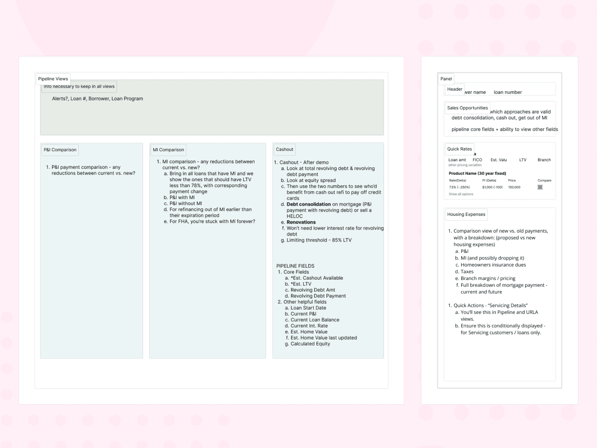
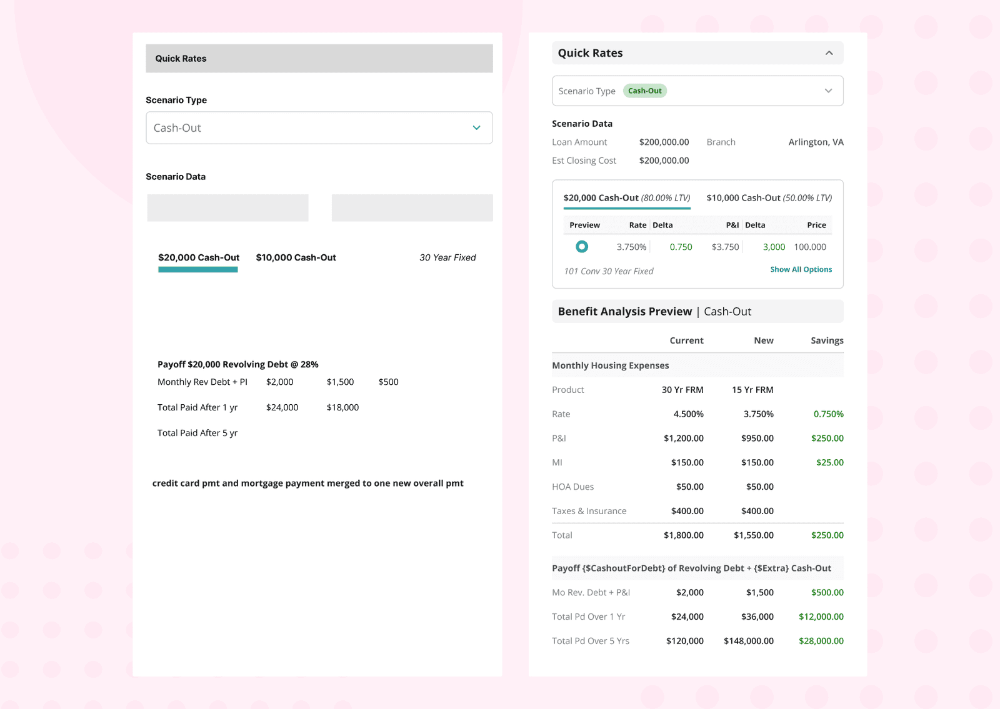
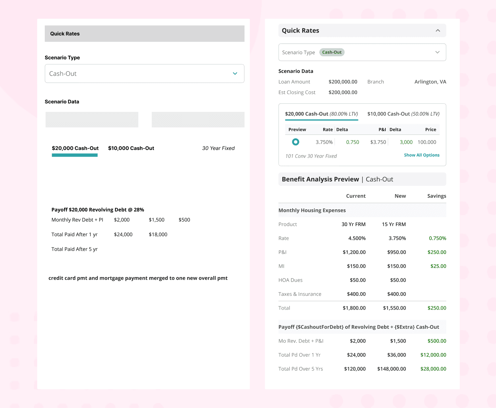
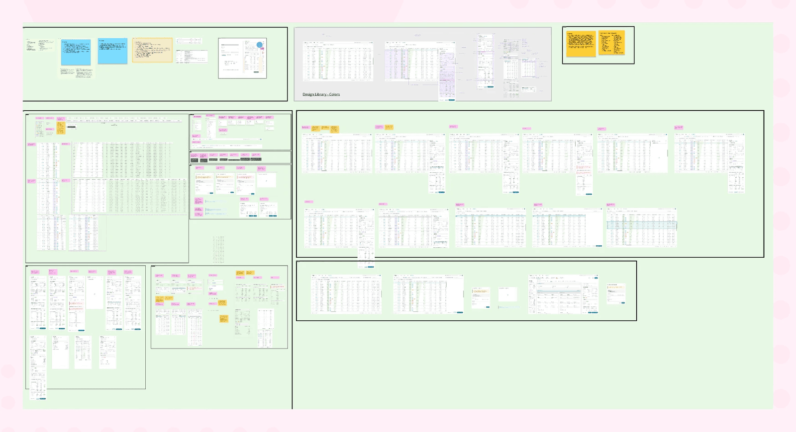
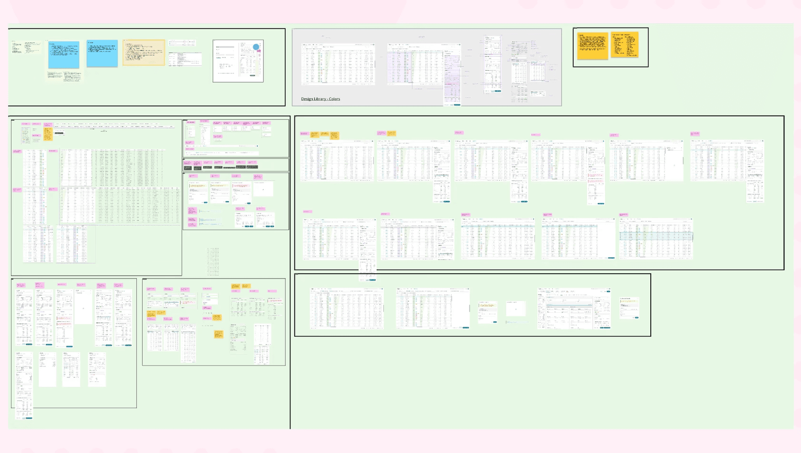
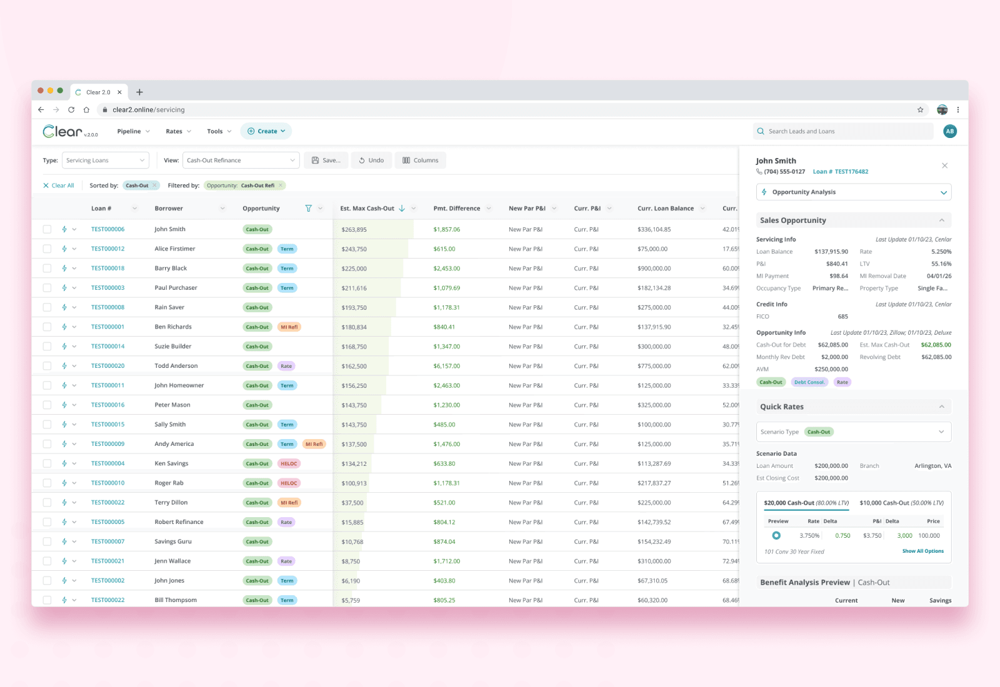

- My role
- Lead designer, start to finish
- Timeline
- 4 weeks
- Team
- Product leaders, business analysts, mortgage experts, engineers
- Product
- CMG's internal sales software, desktop and mobile

A slow market put sales at risk
In early 2024, rising interest rates meant fewer people were buying homes. Loan officers, CMG's mortgage sales staff, are paid commission on new loans, so their income was at risk.
But CMG already had a huge base of existing customers. Some of them could save money by refinancing (replacing their mortgage with a better one), combining debts into their mortgage, or dropping mortgage insurance (an extra monthly fee some homeowners pay). Those were real sales opportunities, hiding in plain sight.
CMG wanted to show officers, and the whole industry, that existing customers could drive new business. The plan was to build this into the company's internal sales software and show it in a live demo at the Tech100 conference, so we had weeks, not months.
In plain terms: help sales staff spot existing customers who could save money, so the customer and the company both win.
Opportunities were buried
Loan officers were missing income because of:
- Scattered information spread across several disconnected systems.
- Slow, manual work to review each customer's situation.
- Missed opportunities to help customers save money, buried in large customer lists.
We needed something that simplified the work, surfaced the opportunities, and was ready to demo within weeks.
Lead designer, start to finish
A tight deadline meant no time for traditional research. I worked directly with product leaders and mortgage experts to define the opportunity, designed the workflows quickly, and partnered with engineering to get it demo-ready.
Research stand-in
With no time to interview loan officers, I partnered with business analysts and used their deep knowledge of the work.
What to show
Decided which information and questions officers need to judge an opportunity.
Flows and wireframes
Sketched different list views and a slide-out panel so officers wouldn't have to jump between screens.
Final design
Used the company design system (its shared library of building blocks) to design quickly and consistently.
Engineering partner
Worked closely with engineers so the design was buildable and fast enough for a live demo.
What ships first
Balanced ambition with what could realistically be built in one month.
Working to a fixed deadline
Work within the constraint
With no time for full research, I focused on one thing: showing the right information in the right place.
Map the workflow
An officer opens the list, sorts and filters by opportunity, picks a customer, and reviews their details and possible savings.
I grouped information the way officers make decisions: the customer's data, quick rate options, and a savings comparison.

Design fast with existing building blocks
Reusing the design system's ready-made parts let me move straight to detailed, realistic designs and refine from there.


Review quickly, hand off cleanly
I checked designs with stakeholders in fast review rounds, then delivered production-ready designs and a fully working prototype straight to engineering.


A customer list with a details panel
1. One list of every customer
Officers see their whole customer base, tens of thousands of loans, in one list they can sort and filter. Before, they relied on static spreadsheets or had to ask experts.
The most important signals sit right in the list (whether a customer can take cash out, their home's estimated value, how much they owe compared with that value, their loan type and interest rate) so officers can prioritize without opening every row.
2. A details panel that does the math
Clicking a customer slides out a panel with three parts:
- Customer data: loan balance, credit and home value, which used to live in several systems.
- Quick rates: instant "what if" refinance options for that customer.
- Savings comparison: current loan and new loan side by side, showing the change in monthly payment, savings and total cost.
Officers no longer calculate options by hand or ask experts for one-off numbers. They can see a customer's options in seconds.

How it works in practice
- Open the customer list.
- Filter for opportunities, such as customers who can take cash out.
- Pick a customer and review their details in the side panel.
- Compare options and find real savings.
- Turn that option into a new loan application with one click.
This created a direct path from existing customers to new loans, something the business didn't have before.
Trade-offs I had to make
No direct user access
I relied on business analysts and limited feedback from officers, and balanced assumptions with fast iteration.
Time pressure
We went deep on the 2 most valuable sales scenarios instead of trying to cover everything.
Showing only what matters
I showed only current information officers could act on, instead of every data point.
Getting officers to act
Officers often wait for customers to call. The design nudges them to reach out first.
What it delivered
Faster to find opportunities
Officers find a customer who could benefit in a fraction of the time.
Income protected
Estimated income officers could keep or gain during a slow market, while keeping customers.
Production demo
Shown live to the industry, positioning CMG as an innovator.
What I learned
I couldn't use the full research toolkit, so I leaned on:
- Clear priorities for what information matters most.
- Deep knowledge of the design system to move fast.
- Quick iteration under a business-critical deadline.
This project showed me how directly design work can protect and grow a company's revenue.
A Tech100 award for CMG
CMG received HousingWire's 2024 Tech100 award for this pipeline, the product I designed. HousingWire is a leading housing industry publication, and the award recognizes the most innovative and impactful companies in mortgage and real estate technology.
Read about the award on CMG's site ↗
Watch the live demo
The design presented live at the Digital Mortgage Conference.
Testing a new app with real estate agents before launch.